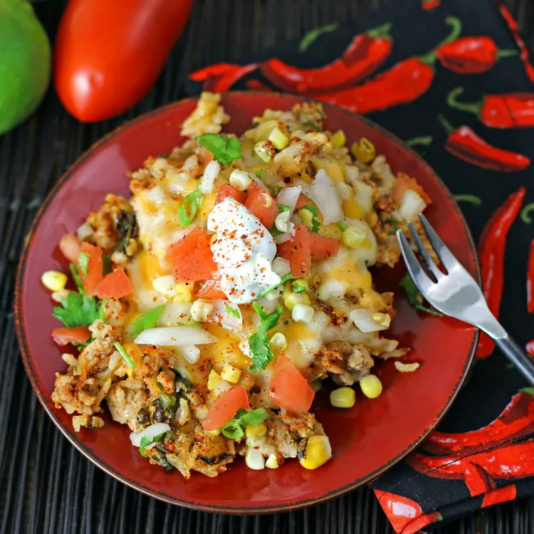

This easy one-pan dinner has all the flavors of pork tacos mixed together with rice, roasted corn, chiles, onion, cheese, and salsa.
This one-pan Mexican dinner, cheesy pork taco rice with roasted corn, chiles, onion, and salsa, is super quick, easy, and has fabulous flavor! Serve with sour cream.
Ingredients
3 poblano peppers, halved lengthwise
1 pound ground pork
1 ½ cups low-sodium chicken broth
1 cup long-grain rice
1 large onion, chopped, divided
1 (1 ounce) packet taco seasoning mix
¼ teaspoon garlic powder
¼ teaspoon onion powder
2 tomatoes, cored and chopped
½ lime, zested and juiced
3 tablespoons chopped cilantro, divided
salt and ground black pepper to taste
½ cup frozen roasted corn (such as Trader Joe's®), thawed
¾ cup shredded Cheddar-Monterey Jack cheese blend
Steps
Set oven rack about 6 inches from the heat source and preheat the oven's broiler. Line a baking sheet with aluminum foil. Place poblano peppers, cut sides down, onto the prepared baking sheet.
Cook under the preheated broiler until the skin of the peppers has blackened and blistered, about 6 minutes. Wrap peppers in the aluminum foil from the baking sheet. Allow peppers to steam as they cool, about 15 minutes. Remove and discard skins and seeds. Chop into bite-size pieces.
Reduce oven temperature to 425 degrees F (220 degrees C).
Heat a large oven-proof skillet over medium-high heat. Stir in ground pork, chicken broth, rice, 1/2 the onion, taco seasoning, garlic powder, and onion powder. Bring to a boil.
Bake, covered, in the preheated oven until pork is no longer pink and rice is tender, about 20 minutes.
Combine the remaining onion, tomatoes, lime zest, lime juice, and 1 tablespoon cilantro in a small bowl. Season salsa with salt and pepper.
Stir the roasted poblano peppers, remaining cilantro, and corn into the baked pork-rice dish. Sprinkle cheese blend on top; let stand until melted, about 2 minutes. Sprinkle the salsa on top.